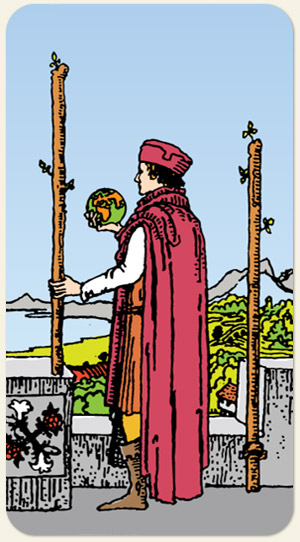

O domínio sobre a vontade, o planejamento estratégico e a antecipação de horizontes. O momento em que a centelha inicial do Ás se estabiliza em uma visão de mundo, indicando que o poder de escolha está nas mãos do indivíduo. É a carta do senhor do mundo, da exploração e da decisão entre manter o que é seguro ou partir para a conquista do desconhecido.
No Dois nós temos não apenas a faísca do fogo, mas o combustível que ele precisa para se manter. A oposição é o acelerador e o freio, oscilações.
Positivo: Alcançar novos lugares, conquistar sonhos. Paus é o naipe que quer vencer, ter energia para dar conta de questões cotidianos e tocar projetos pessoais. Ter apoio de outras pessoas, colaboração.
Negativo: Coisas que tiram a vitalidade, a energia, a atenção. Ter uma questão que impede de resolver outras questões, se esforçar sem conseguir ver resultados, combates e disputas, rivalidades. Na imagem: uma pessoa que quer dominar o mundo mas precisa ficar em seu posto de trabalho.
Símbolos: Globo, Homem, Mar, Montanha, Rosa, Lírio, Túnica Vermelha, Chapéu.
Cores: Vermelho, Laranjado, Azul, Verde, Branco, Cinza.